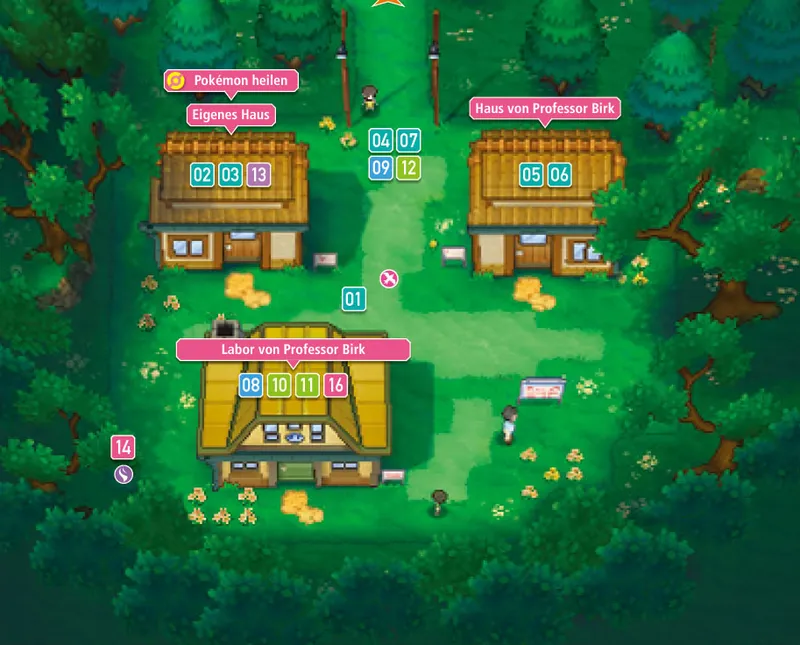
Villa Raíz
Un pueblo pequeño y tranquilo donde empieza todo. Aquí vive el protagonista y está el laboratorio del Profesor Abedul.
Generación 3 · Rubí, Zafiro y Esmeralda
Hoenn está al suroeste de Johto y se inspira en la isla de Kyūshū, en Japón. Es una región tropical, con muchísimo mar, playas, selvas, desiertos y un volcán, el Monte Cenizo. Aquí el tiempo cambia mucho: llueve, hace sol o hay tormentas de arena, y eso influye en los combates. Gran parte del viaje se hace navegando y buceando entre islas.
Pokémon Rubí y Pokémon Zafiro salieron en Japón en 2002 (en España, en 2003). Trajeron 135 Pokémon nuevos, las habilidades y las naturalezas, los combates dobles y los concursos Pokémon. Después llegó Esmeralda, en 2004 (en España, en 2005), y en 2014 los remakes Rubí Omega y Zafiro Alfa.
El protagonista se muda a Villa Raíz, y allí empieza su viaje con el Profesor Abedul. Tiene que conseguir las ocho medallas de Hoenn y vencer a la Liga, pero a la vez dos equipos villanos intentan despertar a unos Pokémon legendarios que podrían cambiar el mundo. En Rubí Omega y Zafiro Alfa, después de la Liga, hay una historia extra: el Episodio Delta.
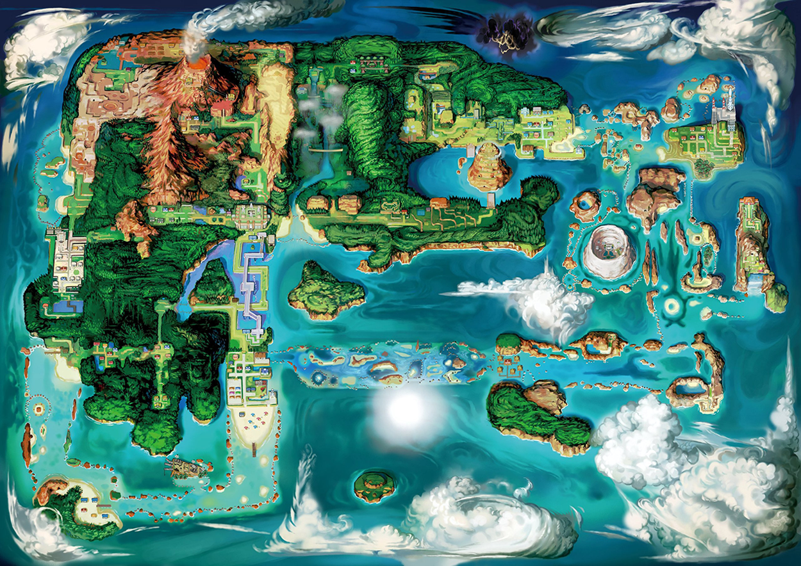
Mapa de la región de Hoenn.

Un pueblo pequeño y tranquilo donde empieza todo. Aquí vive el protagonista y está el laboratorio del Profesor Abedul.
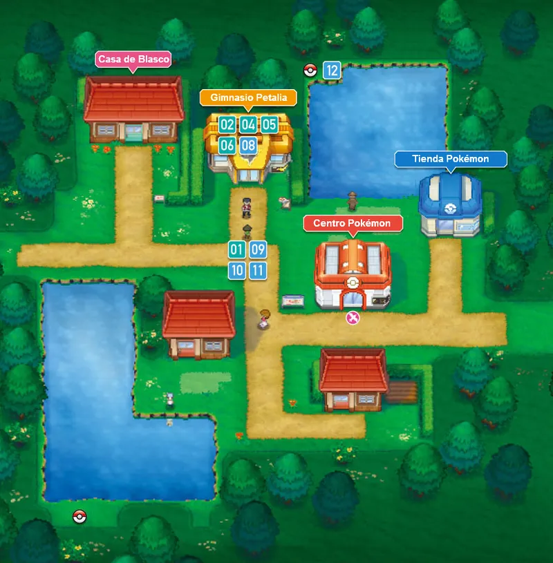
Una ciudad rodeada de hierba. Aquí vive Norman, el padre del protagonista, que es el líder de su gimnasio. Al lado está el Bosque Petalia.
Gimnasio: Normal
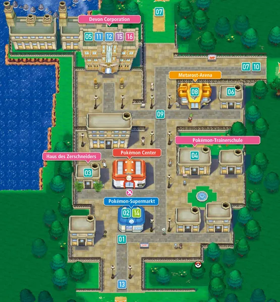
Una ciudad grande con edificios de piedra y la sede de Devon S. A., la empresa que fabrica objetos para los entrenadores.
Gimnasio: Roca
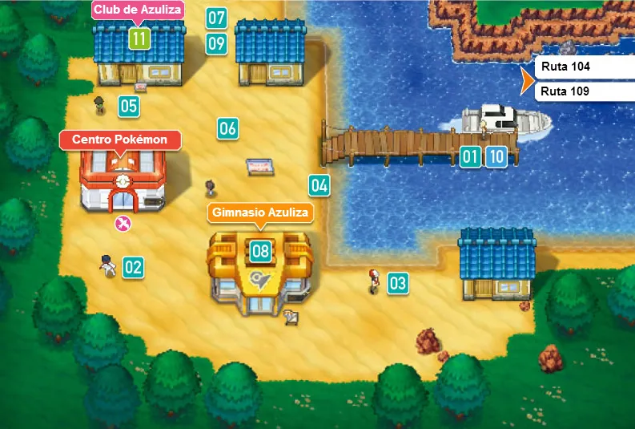
Un pueblo pequeño en una isla, con playa y mucho viento. Cerca está la Cueva Granito.
Gimnasio: Lucha
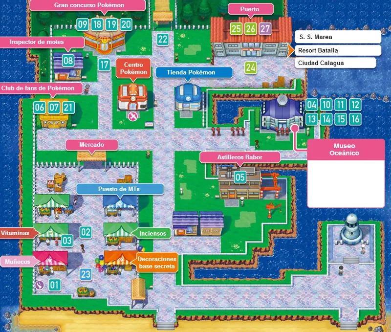
Un gran puerto con un mercado enorme y un museo del mar. Desde aquí salen los barcos hacia otras islas.
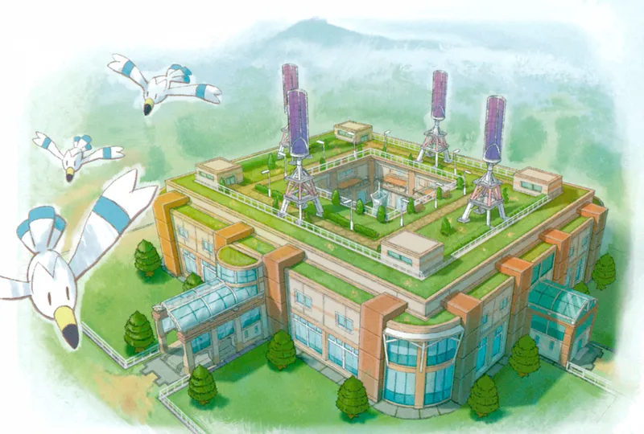
Una ciudad moderna, llena de luces y de cables. Su gimnasio tiene puertas eléctricas y hay que abrirlas una por una.
Gimnasio: Eléctrico
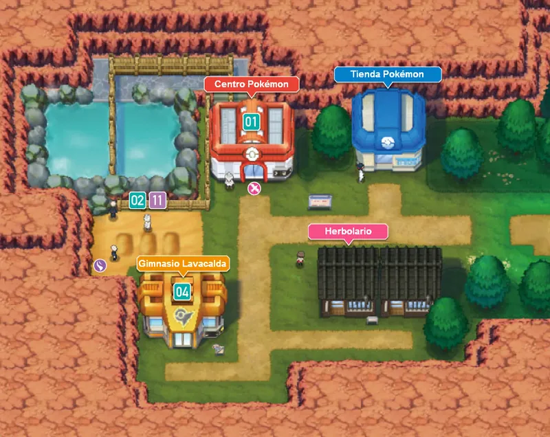
Un pueblo al pie del Monte Cenizo. Tiene aguas termales y arena caliente en la que la gente se entierra para relajarse.
Gimnasio: Fuego
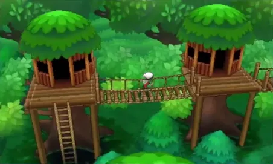
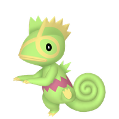
Una ciudad escondida entre árboles gigantes, con casas construidas en lo alto y unidas por puentes de madera. Al salir de la ciudad, algo invisible te corta el paso...
Gimnasio: Volador
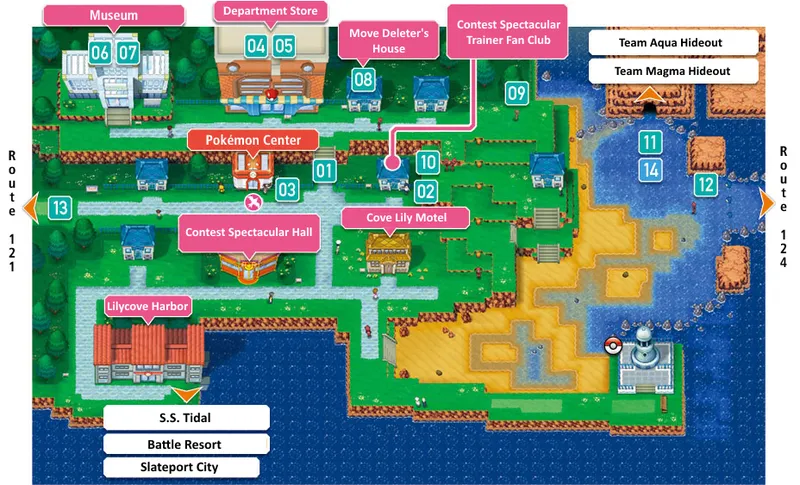
Una ciudad grande en la costa. Tiene el centro comercial más grande de Hoenn y el salón de concursos, y cerca están las guaridas de los equipos Magma y Aqua.
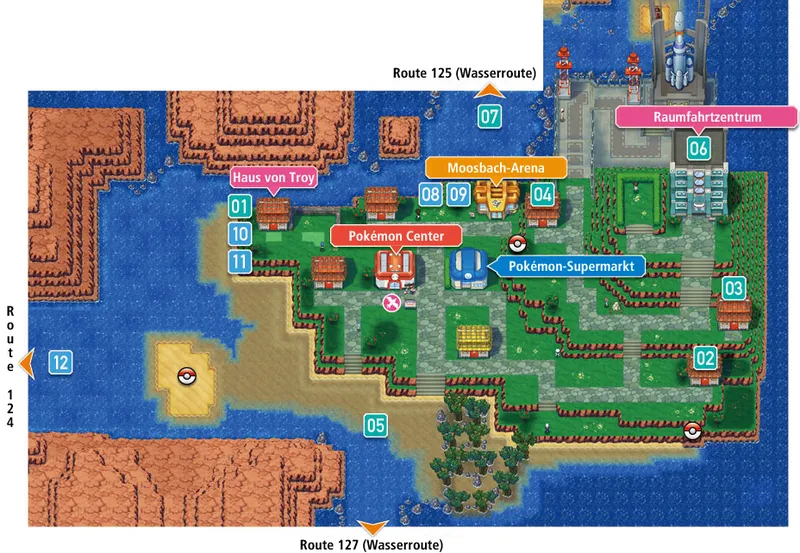
Una ciudad en una isla, con el Centro Espacial, de donde salen cohetes. Su gimnasio es de tipo Psíquico y está lleno de teletransportes.
Gimnasio: Psíquico
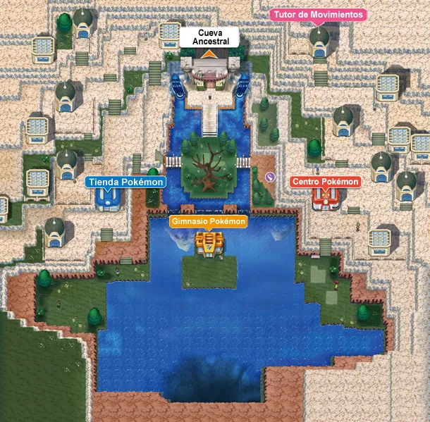
Una ciudad dentro de un cráter, rodeada de agua y con muy pocos caminos para llegar. Es un lugar sagrado para Groudon y Kyogre.
Gimnasio: Agua
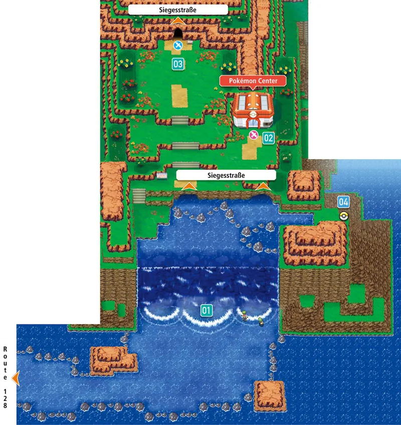
Una ciudad en la isla más oriental de Hoenn. Es la sede de la Liga Pokémon, a la que se llega tras cruzar la Calle Victoria.
Aquí está la Liga Pokémon
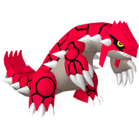
Tierra
El Pokémon continente. Dicen que creó la tierra firme y que puede hacer crecer los continentes. Es el legendario de Rubí y de Rubí Omega.
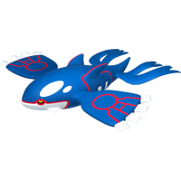
Agua
El Pokémon cuenca. Dicen que creó los mares y que puede provocar lluvias enormes. Es el legendario de Zafiro y de Zafiro Alfa.
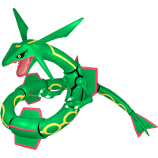
Dragón Volador
El guardián del cielo. Vive en el Pilar Celeste y es el único que puede calmar a Groudon y a Kyogre cuando pelean.
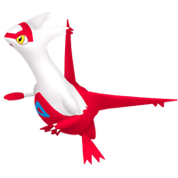
Dragón Psíquico
Un Pokémon muy cariñoso que puede hacerse invisible. Recorre Hoenn y es difícil de encontrar. Es exclusivo de una versión.
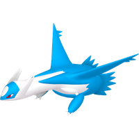
Dragón Psíquico
Muy inteligente: entiende el idioma de los humanos. Recorre Hoenn a gran velocidad. Es exclusivo de una versión.
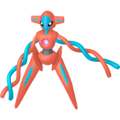
Psíquico
Un Pokémon que llegó del espacio dentro de un meteorito. Puede cambiar de forma según la situación.
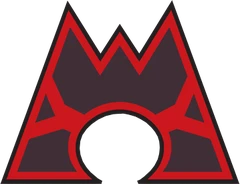
El Equipo Magma quiere aumentar la cantidad de tierra del mundo. Para conseguirlo, quiere despertar a Groudon, y así crear más espacio para las personas y los Pokémon de tierra.
Va vestido de rojo oscuro y sus miembros son expertos en volcanes y en geología. En Rubí y en Rubí Omega son los villanos principales.
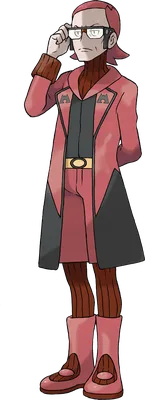
Líder del Equipo Magma
Un hombre serio y muy inteligente. Está convencido de que el mundo necesita más tierra y hace lo que sea para conseguirla.
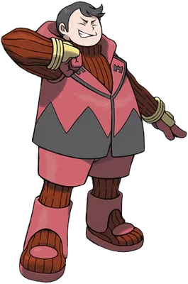
Comandante. Es el segundo de Magno y presume de ser muy fuerte.
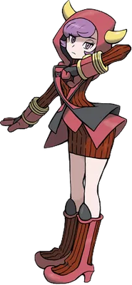
Comandante. Es fría y muy fiel a Magno; lleva a cabo sus planes con mucha seriedad.
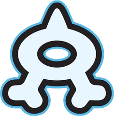
El Equipo Aqua quiere lo contrario: aumentar la cantidad de mar. Para conseguirlo, quiere despertar a Kyogre, porque cree que así habrá más océano para los Pokémon de agua.
Visten como piratas, con camisetas de rayas, y son expertos en el mar. En Zafiro y en Zafiro Alfa son los villanos principales.
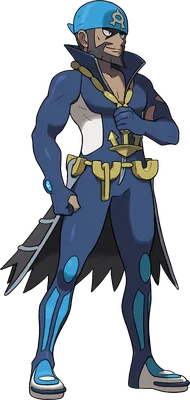
Líder del Equipo Aqua
Un hombre muy tranquilo que quiere hacer crecer el mar. Es muy amable con los suyos y muy decidido.
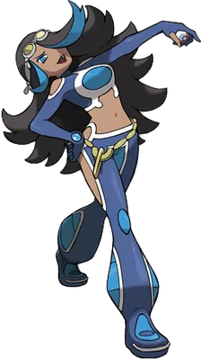
Comandante. Es la segunda de Aquiles y manda con mucha autoridad.
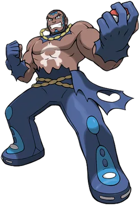
Comandante. Es enorme y muy fuerte, y obedece a Aquiles sin dudar.
Los ocho gimnasios de Hoenn, en el orden normal del viaje. Vito y Leti son hermanos y combaten juntos en un combate doble.
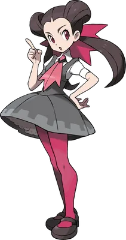
Ciudad Férrica
Roca · Medalla Piedra
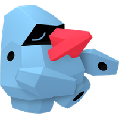
Pokémon estrellaNosepass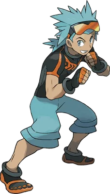
Pueblo Azuliza
Lucha · Medalla Puño
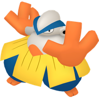
Pokémon estrellaHariyama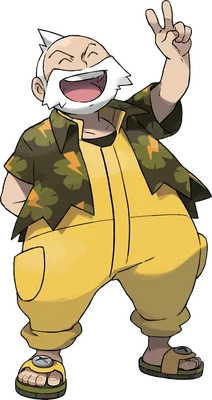
Ciudad Malvalona
Eléctrico · Medalla Dinamo
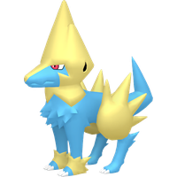
Pokémon estrellaManectric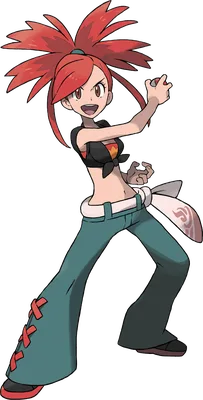
Pueblo Lavacalda
Fuego · Medalla Calor
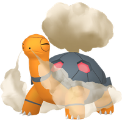
Pokémon estrellaTorkoal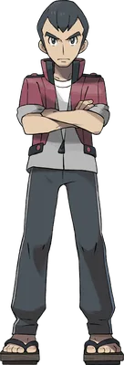
Ciudad Petalia
Normal · Medalla Equilibrio
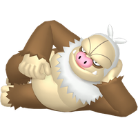
Pokémon estrellaSlaking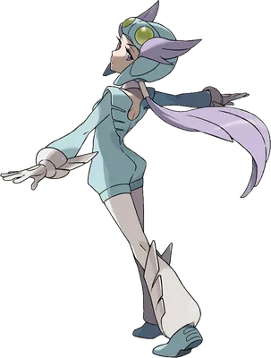
Ciudad Arborada
Volador · Medalla Pluma
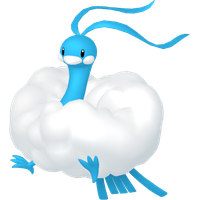
Pokémon estrellaAltaria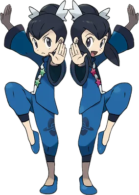
Ciudad Algaria
Psíquico · Medalla Mente
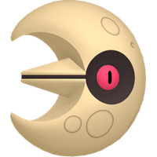
Pokémon estrellaLunatone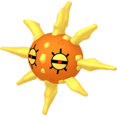
Pokémon estrellaSolrock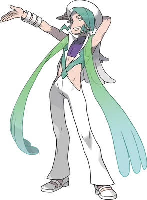
Arrecípolis
Agua · Medalla Lluvia
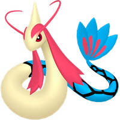
Pokémon estrellaMiloticLa Liga está en Ciudad Colosalia, en la isla más al este. Hay que tener las ocho medallas y cruzar la Calle Victoria. Primero se vence al Alto Mando y, por último, al Campeón.
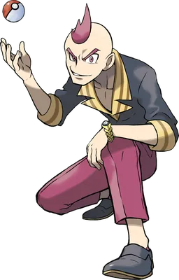
Alto Mando
Siniestro
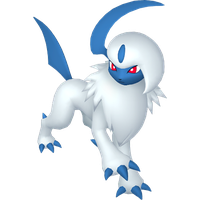
Pokémon estrellaAbsol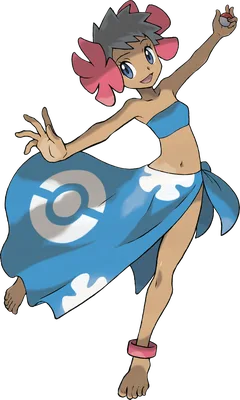
Alto Mando
Fantasma
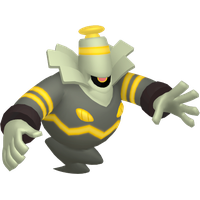
Pokémon estrellaDusknoir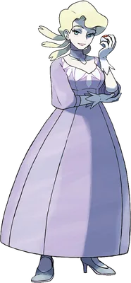
Alto Mando
Hielo
Alto Mando
Dragón
Campeón
Es el campeón de Hoenn y le encantan las piedras. Además, es el hijo del presidente de Devon S. A. Te ayuda cuando los dos equipos despiertan a Groudon y a Kyogre.
Estudia cómo viven los Pokémon en su entorno natural. Le gusta investigar sobre el terreno, así que a menudo está en la hierba y se mete en problemas. Te regala tu primer Pokémon.
Tu rival si eliges a la protagonista. Es el hijo del Profesor Abedul y quiere ser un gran entrenador. Se encuentra contigo varias veces por el camino.
Tu rival si eliges al protagonista. Es la hija del Profesor Abedul y quiere ser una gran investigadora Pokémon, como su padre. Es amable, pero cuando combate va muy en serio.